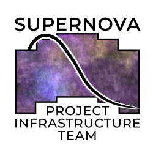

Transient classification and redshift inference from Roman prism spectra
Navigation
How STRIDER works
Installation
Running STRIDER
Reading the results
Models
Running on the Roman SMDC
Glossary
API reference
Related Topics
Documentation overview
Quick search
Index
B
|
C
|
D
|
E
|
F
|
H
|
L
|
M
|
N
|
P
|
R
|
S
|
T
|
U
|
V
|
W
B
best_match (strider.Classification attribute)
C
card() (strider.Classification method)
class_probabilities (strider.Classification attribute)
class_redshift_posterior (strider.Classification attribute)
class_redshifts (strider.Classification attribute)
classes (strider.Model attribute)
Classification (class in strider)
classify() (strider.Model method)
classify_first() (strider.Model method)
classify_many() (strider.Model method)
D
days_observed (strider.Classification attribute)
dropped_visits (strider.Classification attribute)
E
equal_prior_probabilities (strider.Classification attribute)
error (strider.Visit attribute)
error_scale (strider.Classification attribute)
F
fetch() (in module strider.registry)
fingerprint (strider.Classification attribute)
(strider.Model attribute)
flags (strider.Classification attribute)
flux (strider.Visit attribute)
from_package() (strider.Model class method)
from_table() (strider.Transient class method)
H
host_redshift (strider.Transient attribute)
host_redshift_error (strider.Transient attribute)
L
load_example() (in module strider)
load_model() (in module strider)
log_evidence (strider.Classification attribute)
M
mask (strider.Visit attribute)
match_gap (strider.Classification attribute)
match_strength (strider.Classification attribute)
measured_error_scale() (in module strider.preprocess)
mjd (strider.Visit attribute)
Model (class in strider)
model (strider.Classification attribute)
model_dir() (in module strider.registry)
model_path() (in module strider.registry)
module
strider
strider.io
strider.preprocess
strider.registry
N
name (strider.Model attribute)
next_best_class (strider.Classification attribute)
P
p_ia (strider.Classification attribute)
package (strider.Model attribute)
plot() (strider.Classification method)
plot_accumulation() (strider.Model method)
R
read_smdc() (in module strider.io)
read_spectra() (in module strider.io)
read_transient() (in module strider.io)
Redshift (class in strider.io)
redshift (strider.Classification attribute)
(strider.io.Redshift attribute)
redshift_68 (strider.Classification attribute)
(strider.io.Redshift attribute)
redshift_95 (strider.Classification attribute)
(strider.io.Redshift attribute)
redshift_cell_widths (strider.Classification attribute)
redshift_given() (strider.Classification method)
redshift_grid (strider.Classification attribute)
(strider.Model attribute)
redshift_peaks (strider.Classification attribute)
redshift_posterior (strider.Classification attribute)
(strider.io.Redshift attribute)
redshift_probability (strider.Classification attribute)
redshift_range (strider.Classification attribute)
results_schema() (in module strider.io)
results_table() (in module strider.io)
S
second_class (strider.Classification attribute)
second_probability (strider.Classification attribute)
signal_to_noise (strider.Classification attribute)
source_probability (strider.Classification attribute)
strider
module
strider.io
module
strider.preprocess
module
strider.registry
module
T
to_dict() (strider.Classification method)
top_class (strider.Classification attribute)
top_probability (strider.Classification attribute)
trained_classes (strider.Classification attribute)
Transient (class in strider)
U
untrained_share (strider.Classification attribute)
V
Visit (class in strider)
visits (strider.Transient attribute)
visits_used (strider.Classification attribute)
W
warnings (strider.Classification attribute)
wavelength (strider.Visit attribute)
weak_source_below (strider.Model attribute)
write_evidence_maps() (in module strider.io)
write_redshift_curves() (in module strider.io)
write_results() (in module strider.io)
write_spectra() (in module strider.io)